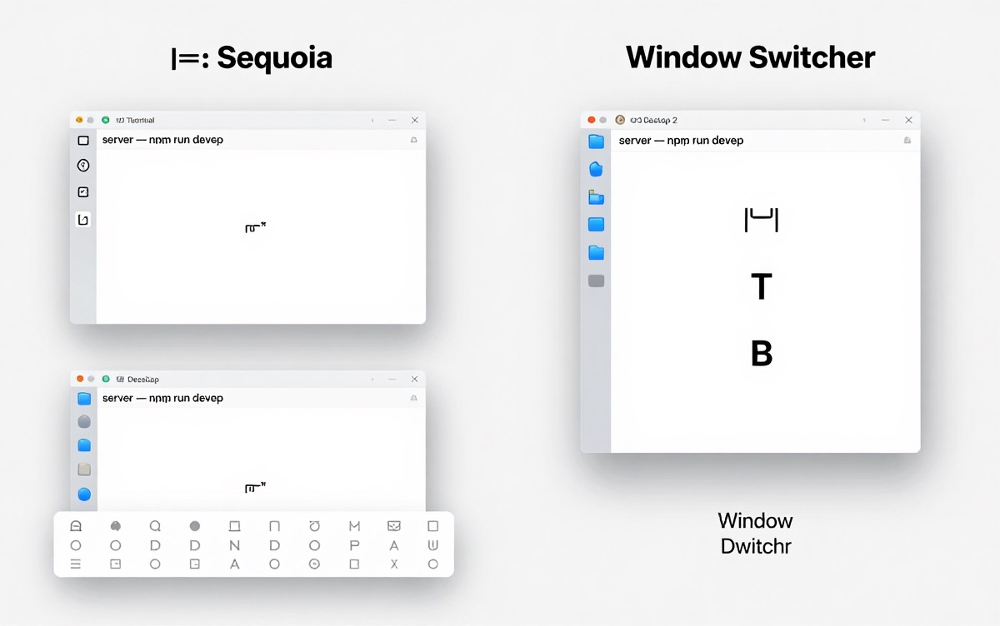
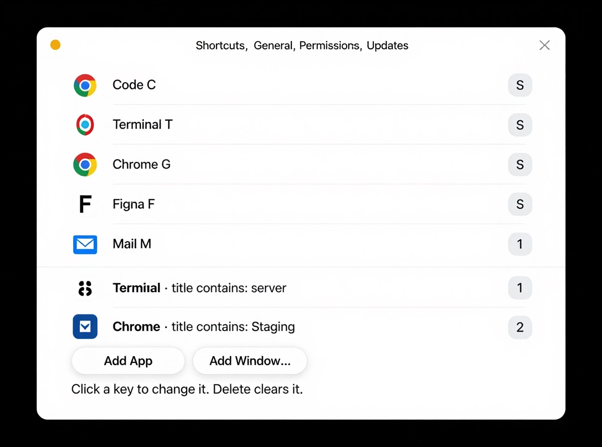

Every window, one key away.
Press ⌥⇥ and every app and window on your Mac shows up, on every desktop, each with a key next to it. Press the key and you're there.
- Free
- No account
- Nothing runs between uses
- Every app has a key from the start
From: Priya Can you check the staging server before 10? The login page looked slow this morning. Thanks!
> app@2.4.0 dev > next dev -p 3000 ✓ Ready in 1.2s GET /login 200 in 38ms GET /api/session 200 in 12ms █
You're reading mail. The server is on another desktop.
Every app on your Mac gets a key.
There's nothing to set up per app. If it has a window, Window Switcher lists it and gives it a key.
Two keys from anywhere to anywhere.
Press ⌥⇥ and let go
The switcher opens over whatever you're doing and waits. No keys to hold down.
See everything
Every app and every window, on every desktop and full-screen Space, in columns.
Press an app's key
One window? You're there. Several? They light up with letters.
Press a letter
That window comes forward, on its own desktop if it has to. Esc goes back.
Same key, every time.
⌘⇥ sorts apps by when you last used them, so where an app sits changes all day. Window Switcher gives each app a key and keeps it. After a day, your fingers know them.
- No cycling. You don't tap ⇥ until the right icon lights up. You press the key you already know.
- No shuffling. Window letters follow the order windows were opened, so T B is the same terminal all afternoon.
- No searching. Nothing to type and nothing to read twice. The list stays still while you choose.

AI draft · replace⌥⇥ by default. ⌘⇥ if you like.
Pick the shortcut your hand reaches for. Whichever you choose, it opens the same switcher.
⌥⇥
macOS has no shortcut on Option-Tab, so it's free to claim and the built-in switcher stays exactly as it was.
- Setup
- None
- Permission
- None to open
- Best for
- Trying it out
⌘⇥
Turn it on and Command-Tab opens Window Switcher. The macOS switcher comes back whenever Window Switcher quits.
- Setup
- One switch in Settings
- Default
- Off
- Best for
- Muscle memory
Your own shortcut
Record any shortcut you like instead, such as ⌃⇥ or a spare key on your keyboard. Add ⇧ to start from the end.
- Setup
- Settings → General
- Default
- ⌥⇥
- Best for
- Custom keyboards
Stop cycling. Start pressing.
The same trips, with the built-in switcher and with Window Switcher.
The second of three terminal windows
A design file on another desktop
Your work Gmail, not your personal one
An app that isn't open yet
Set the keys you care about. Leave the rest.
You don't have to set anything up. Choose keys only where you have an opinion.
- Automatic keys. Every app gets the first free letter of its name, and keeps it. Costs nothing, but Calendar might end up on A if C is taken.
- Your keys. Put the apps you use most on the keys you want. A minute in Settings, and automatic keys move out of their way.
- A window's own key. One press to the window you always want, matched by its title. Worth it for the two or three windows you live in.

AI draft · replaceThe parts you'll miss when you go back.
Two keys to any window.
⌘⇥ picks an app. Window Switcher picks the window: the app's key, then the window's letter. The letters don't reshuffle as you work.
How it works → SpacesEvery desktop in one list.
Windows on other desktops and in full-screen apps are listed next to the ones in front of you. Choose one and you go to its desktop.
How it works → ChromeChrome, sorted by profile.
Work, personal and client windows each sit under their profile's name, in the colour you gave it in Chrome.
How it works → LaunchKeys for apps that aren't open.
An app with a key is listed even when it isn't running. Press its key and it launches. If it's running with no windows, you get a new one.
How it works →Made for people with a lot of windows.
Developers
Three editors, four terminals and a browser across two desktops. T B is the server, C A is the frontend, all day.
Consultants and agencies
A Chrome profile per client. Each client's windows sit under their name and colour, so you never reply from the wrong account.
Designers
A dozen Figma files and Preview windows that look alike as thumbnails. As a list of names, the right one is obvious.
Writers and researchers
The draft, the notes and six source PDFs open at once. Jump between them without reaching for the mouse or losing your sentence.
Full-screen and Spaces people
An app per desktop and a few in full screen. Reach any window directly, without swiping through desktops to find it.
New to the Mac
Coming from Windows, your thumb already reaches for Alt-Tab. ⌥⇥ is right there, and it shows windows, not just apps.
What people say after a week.
Placeholders. These show the kind of quote we want; replace them with real ones, used with permission, before launch.
"I stopped using Mission Control. I didn't decide to, I just noticed I hadn't opened it in days."
Placeholder · a developer
"Four Chrome profiles, four colours. I haven't sent an email from the wrong account since."
Placeholder · a consultant
"The letters staying put is the whole thing. My hands know where everything is."
Placeholder · a designer
"I turned on the ⌘⇥ option on day two and never looked back."
Placeholder · a product manager
"Finally a switcher that shows me windows on my other desktops."
Placeholder · a video editor
"It doesn't do anything until I press the key. That's what I wanted."
Placeholder · a sysadmin
What you get on top of the built-in switcher.
| Window Switcher | macOS ⌘⇥ and Mission Control | |
|---|---|---|
| Pick a window, not just an app | YesApp's key, then the window's letter | Partly⌘` cycles the front app's windows; ⌃↓ shows them |
| Windows on other desktops | YesListed with the rest, one choice away | PartlyMission Control shows other desktops as thumbnails |
| The same key every time | YesKeys stay with their app | NoOrdered by most recently used |
| Stays open after you let go | YesWaits until you choose or press Esc | NoCloses when you release ⌘ |
| Opens apps that aren't running | YesFor apps you've given a key | NoOpen apps only |
| Chrome windows by profile | YesIn each profile's colour | No |
Sources: Apple's "Mac keyboard shortcuts" and Mission Control guides, checked 25 Nov 2026. "Closes when you release ⌘" and "Open apps only" are our reading of how ⌘⇥ behaves; Apple's pages describe it as switching among "your open apps".
Draft. Rewrite this in your own words before launch.
I keep a lot of windows open. Three projects, a terminal for each, a Chrome profile for every client, and something in full screen on another desktop. ⌘⇥ gets me to the right app. Then I start hunting.
So we built the switcher I wanted: one press to see everything, and a key for every window that doesn't move. After a few days you stop reading the list. Your hands just go.
It doesn't watch your keyboard, it doesn't run between uses, and it doesn't send anything anywhere. It's a small app that does one thing, and it's free.
If something about it bugs you, tell us. We use it all day too.
Ryan Parlee, Flying Hippo
Press ⌥⇥. Then the next key you want.
Free for the Mac. No account, nothing running in the background, and every app has a key the moment it's installed.
Download Window Switcher for Mac